简体中文 · 点击图片查看原图 · 2026 年 10 月 6 日
5 张推荐截图 + 1 张可选欢迎页 · 1206 × 2622 · 当前商店必填尺寸
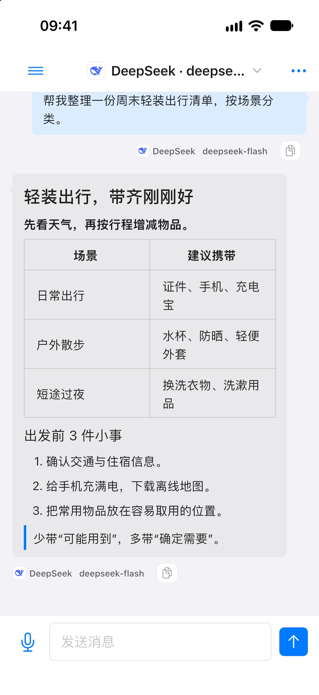
1206 × 2622 · 325 KB · 推荐上传
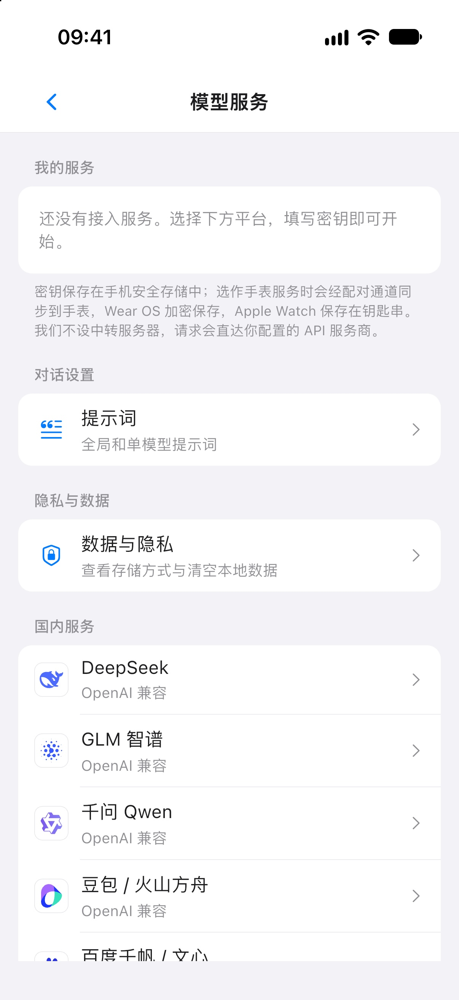
1206 × 2622 · 269 KB · 推荐上传
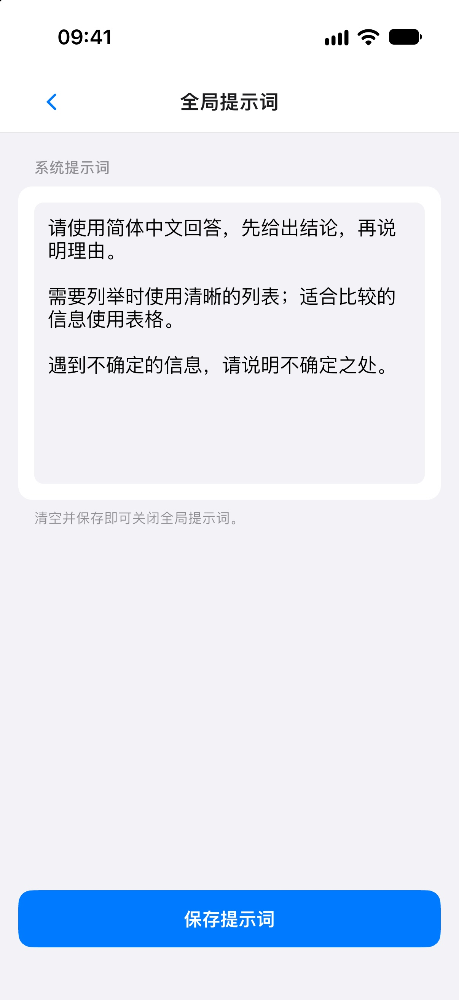
1206 × 2622 · 207 KB · 推荐上传
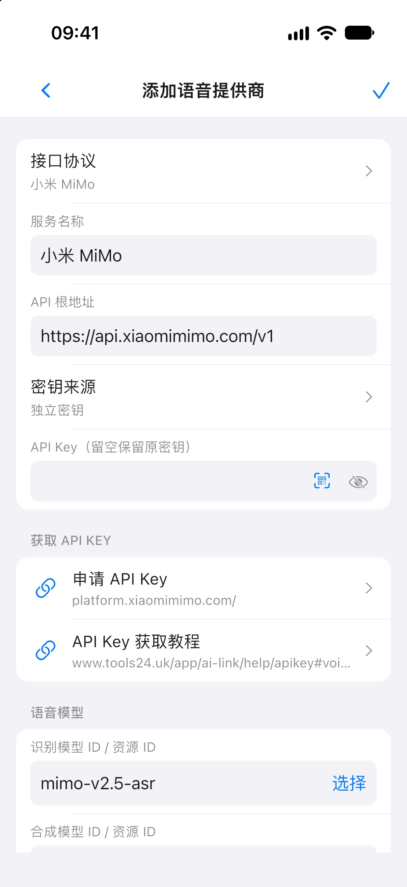
1206 × 2622 · 246 KB · 推荐上传
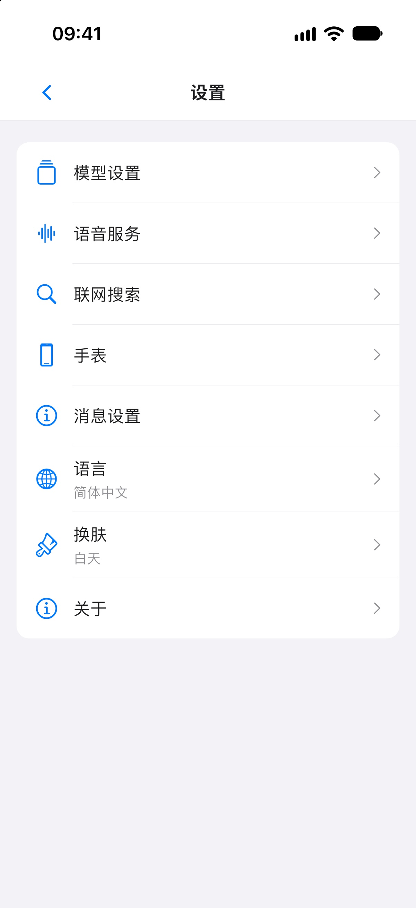
1206 × 2622 · 149 KB · 推荐上传
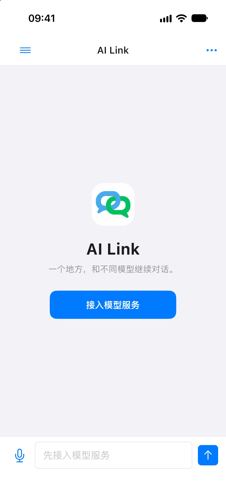
1206 × 2622 · 133 KB · 备选素材
6 张备选截图 · 1320 × 2868 · 默认不加入本次推荐上传组
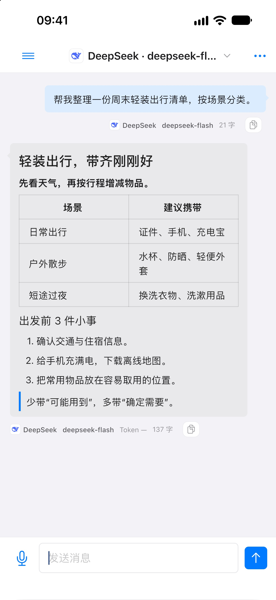
1320 × 2868 · 341 KB · 备选素材
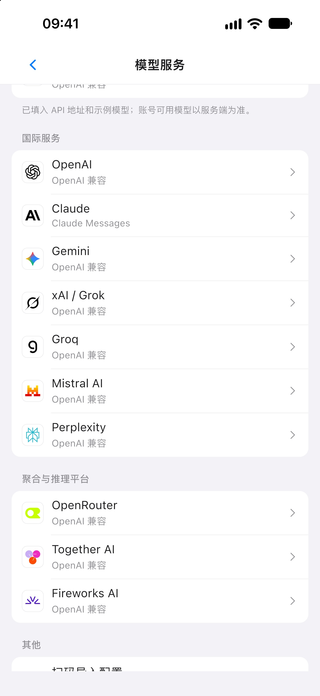
1320 × 2868 · 265 KB · 备选素材
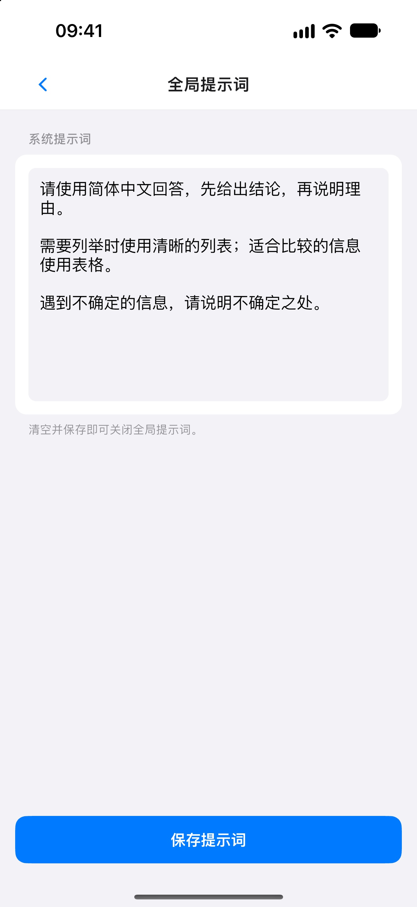
1320 × 2868 · 222 KB · 备选素材
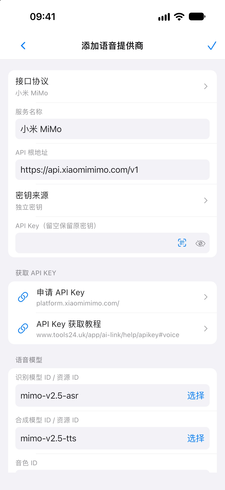
1320 × 2868 · 280 KB · 备选素材
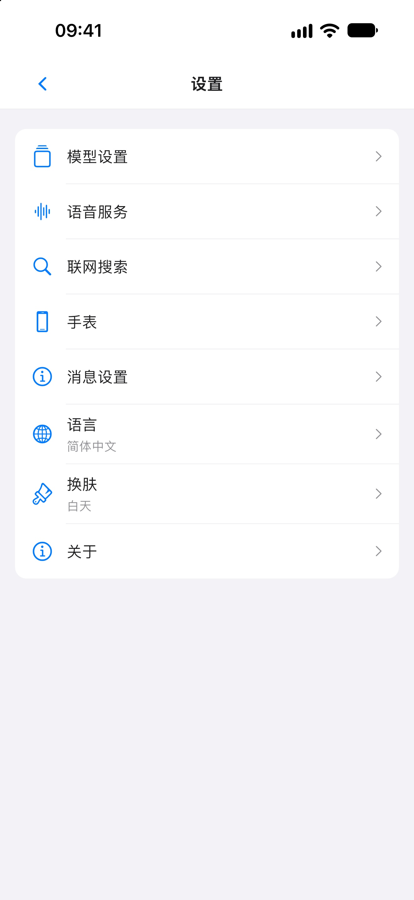
1320 × 2868 · 160 KB · 备选素材
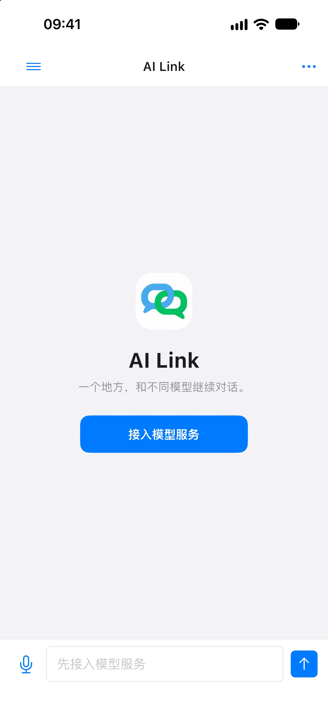
1320 × 2868 · 144 KB · 备选素材
3 张推荐截图 · 2752 × 2064
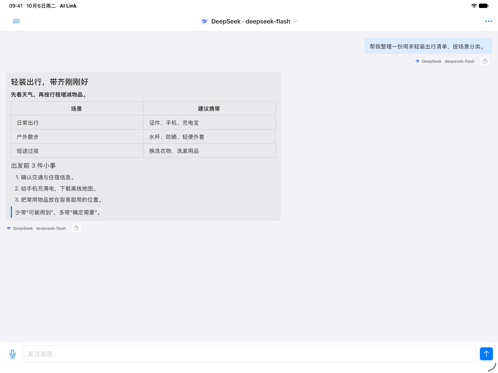
2752 × 2064 · 283 KB · 推荐上传
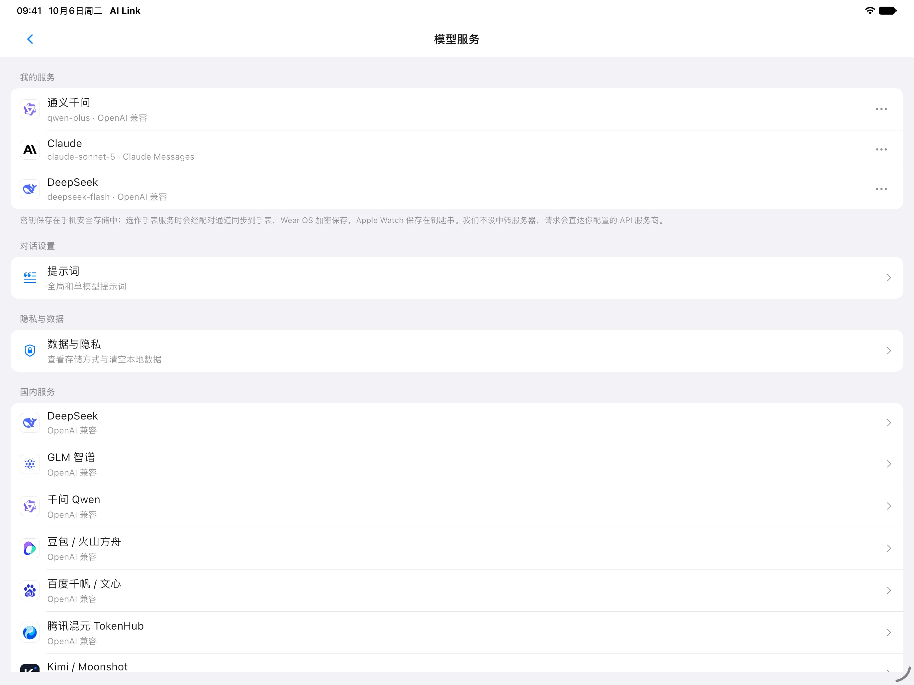
2752 × 2064 · 318 KB · 推荐上传
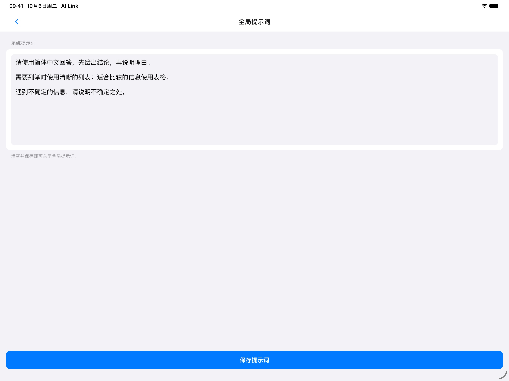
2752 × 2064 · 206 KB · 推荐上传
2 张推荐截图 · 422 × 514
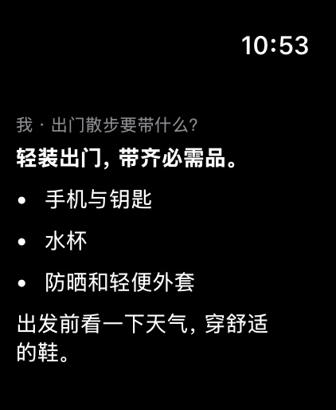
422 × 514 · 39 KB · 推荐上传
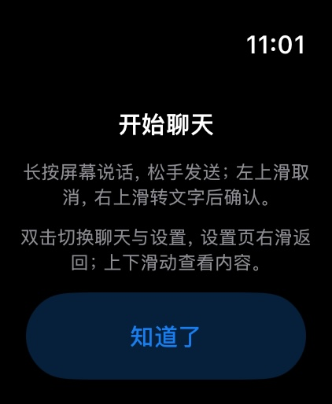
实际购买页 · 1206 × 2622 · 本地 StoreKit 测试价格 · 待上传
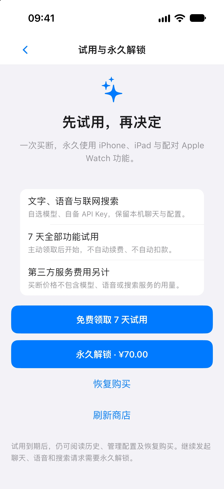
免费领取、¥70.00 与恢复购买入口
1024 × 1024 · 随应用构建提供，不放入截图区域
1024 × 1024 · 719 KB · 备选素材